Ronghao Yu1,2⋆‡ , Yang Liu3⋆ , Juncheng Wang4 , Chao Xu2,5 , Yimo Shao6 , Baigui Sun2,5 , Yong Liu1,7† , and Shan Luo3†
1 Zhejiang University, CHN 2 IROOTECH TECHNOLOGY, CHN 3 King's College London, UK 4 The Hong Kong Polytechnic University, CHN 5 Wolf 1069 b Lab, Sany Group, CHN 6 The University of Melbourne, AUS 7 Huzhou Institute of Zhejiang University, CHN
Abstract. Recent work has shown that Chain-of-Thought (CoT) reasoning improves text-to-motion generation, yet generating explicit reasoning tokens at inference time introduces significant latency. We present LaCT-Motion (Latent Chain-of-Thought for Motion), the first method to transfer latent reasoning from language to LLM based human motion generation, achieving explicit-CoT-level quality without its inference overhead. Our three-stage recipe mirrors human skill acquisition: practice learns explicit CoT reasoning via supervised fine-tuning; internalization progressively compresses variable-length reasoning steps into compact continuous latent tokens through a stage-based curriculum with stochastic scheduling; and perfection refines the fully latent policy with GRPO using format, motion similarity, and semantic similarity rewards. At inference, the model reasons entirely through latent tokens with no explicit text generated. Experiments on HumanML3D show that latent internalization not only matches but surpasses explicit CoT reasoning (R-Precision Top-1: 0.577 vs. 0.515 for Motion-R1, FID: 0.167), suggesting that continuous latent tokens encode spatio-temporal reasoning more effectively than discrete text. Code will be released at https://github.com/Erwin2233/LaCT-Motion.
Keywords: Text-to-Motion Generation · Chain-of-Thought Reasoning · Latent Reasoning · Reinforcement Learning
1 Introduction
"Practice makes perfect." - Proverb
The proverb above captures a universal principle of skill acquisition: mastery emerges not from rote memorization but from a progression of deliberate practice, internalization, and refinement. A novice pianist first reads sheet music note by note; with practice, the same passages become automatic, executed fluidly without conscious decomposition. We argue that this same learning paradigm can be applied to text-to-motion generation: a model should first practice explicit step-by-step reasoning, then internalize it into efficient latent representations, and finally be perfected through reinforcement.
⋆ Equal contribution.
† Corresponding authors.
‡ This work was conducted in collaboration with IROOTECH TECHNOLOGY.
Human motion generation is fundamental to robotics, animation, and humancomputer interaction. Recent advances in large-scale generative modeling have led to substantial progress in text-to-motion synthesis [9, 10, 16, 50]; however, generating high-quality motion often requires multi-step semantic reasoning over natural-language instructions. As illustrated in Fig. 1 (left), existing approaches fall into two extremes. The No Planning [44] paradigm directly maps text to motion tokens, offering speed but lacking the capacity for compositional reasoning. The Explicit Planning paradigm [24] equips the model with explicit Chain-ofThought (CoT) [41] steps, improving quality but incurring significant inference latency from sequential token generation.
Our key insight is that explicit reasoning is a means of learning, not an endgoal for deployment. However, transferring latent reasoning from language to motion generation is non-trivial: motion CoT involves variable-length decompositions (1-9 atomic steps) encoding spatio-temporal semantics such as joint coordination, physical plausibility, and temporal dynamics, which are absent from the mathematical and logical tasks studied in prior latent reasoning work. Inspired by recent advances in latent reasoning, we propose LaCT-Motion, a training recipe that uses explicit CoT as a scaffold during training but operates entirely through Implicit Planning at inference time (Fig. 1, left-bottom). The explicit-to-latent transition mirrors how human expertise develops: from conscious, step-by-step execution to automatic, internalized skill. As shown in Fig. 1 (right), our approach achieves the best R-Precision Top-3 and, among LLM-based CoT reasoning methods, the lowest FID, while requiring only 7min for full test-set evaluation, compared to 1h for explicit planning.
Returning to our analogy, even after internalizing a skill, continued practice with feedback drives further improvement. In the reinforcement learning literature, Group Relative Policy Optimization (GRPO) [21] provides a valuefunction-free mechanism for refining policies through reward-driven optimization, and has been applied to explicit-CoT motion generation by Motion-R1 [24]. We extend GRPO to the fully latent regime, using verifiable rewards to "perfect" the internalized representations, completing the practice-to-mastery arc. We term this overall approach the practice-to-mastery training paradigm.
Concretely, our training recipe comprises three stages: (i) Practice-explicit CoT SFT establishes a reasoning foundation; (ii) Internalization-a curriculum progressively compresses explicit steps into continuous latent tokens;
(iii) Perfection-GRPO with verifiable rewards refines the fully latent policy. Motion is tokenized via a VQ-VAE so that the entire pipeline reduces to conditional language modeling; at test time, the model reasons entirely through latent tokens with no explicit CoT overhead.

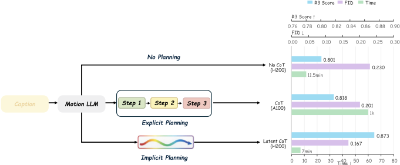
Time ↓
Fig. 1: Left: Comparison of three text-to-motion generation paradigms. No Planning directly maps text to motion tokens without intermediate reasoning. Explicit Planning generates sequential CoT reasoning steps before motion decoding, improving quality at the cost of high latency. Implicit Planning (ours) compresses reasoning into continuous latent tokens, enabling efficient inference with no explicit text generation. Right: Quantitative comparison on HumanML3D showing R-Precision Top-3, FID, and wallclock evaluation time. Explicit Planning time is cited from Motion-R1 [24] (measured on A100); our Implicit Planning is measured on H200.
Contributions.
- We present the first transfer of latent reasoning from language to multimodal generation, extending the paradigm from symbolic logic to open-ended spatio-temporal motion synthesis.
- We design a stage-based curriculum with stochastic scheduling for variable-length CoT compression, addressing heterogeneity absent in prior latent reasoning work.
- We tailor GRPO to the fully latent regime with format, motion similarity, and semantic similarity rewards, enabling reward-driven optimization without access to discrete reasoning tokens.
- Experiments on HumanML3D show that latent internalization surpasses explicit CoT (R-Precision Top-1: 0.577 vs. 0.515 [24]), suggesting continuous latent tokens encode spatio-temporal reasoning more effectively than discrete text.
2 Related Work
2.1 Multimodal Large Language Models and Reasoning.
Multimodal large language models [1,18,19,35,43] have advanced perception and generation, yet many real-world applications demand structured reasoning over complex inputs [5,46]. Building on CoT prompting [40,41], recent work extends CoT-style reasoning to multimodal settings [48] and shows that reasoning skills can be refined through feedback-driven training [22, 25, 34]. DeepSeek-R1 [13] employs GRPO [21], a reinforcement learning algorithm that improves reasoning by leveraging reward signals from downstream tasks.
2.2 Latent and Implicit Reasoning.
To avoid the verbosity and latency of explicit CoT, recent work explores latent reasoning, where multi-step computation is performed in continuous hidden-state space without generating textual traces [14, 29]. Self-distillation from explicit CoT into latent representations has proven effective for retaining reasoning ability [29], and the idea has been extended to multimodal settings where latent variables serve as internal reasoning states [32]. However, prior latent reasoning methods target language-only tasks with fixed-length reasoning and verifiable answers. Extending them to open-ended spatio-temporal generation introduces new challenges: variable-length reasoning processes (1-9 steps), reward design without a unique correct answer, and encoding parallel multi-joint dynamics. Concurrently, Think-Before-You-Move (TBYM) [28] also explores latent reasoning for motion generation but uses a standalone autoregressive Transformer rather than a pre-trained LLM, and does not incorporate reinforcement learning for policy refinement.
2.3 3D Human Motion Synthesis.
Recent advances in 3D human motion synthesis have enabled generation from diverse input modalities, including action labels [2, 8, 12, 26], textual descriptions [3,4,9-11,16,17,27,36,39,44,50], control signals [31,33,52-54,56], and music or audio [6,20,30,47]. Among these, text-to-motion generation has attracted particular attention due to its broad applicability and natural user interface.
Diffusion models have emerged as a dominant paradigm, with notable works including MDM [37], MotionDiffuse [51], MLD [7], and EnergyMoGen [49], which composes energy-based diffusion priors in latent space for compositional generation. MotionStreamer [45] further bridges diffusion and autoregression by operating in a causal latent space, enabling streaming generation. While effective, these latent-diffusion approaches typically require manual duration specification and achieve compositionality through architectural design rather than internalized planning. In parallel, discrete token-based approaches built upon VQ-VAEs have also achieved impressive results, including TM2T [11], T2MGPT [50], MotionGPT [16], and MoMask [9]. More recently, LLM-based methods have gained momentum by casting motion generation as conditional language modeling [38, 39, 42, 44, 55], while MoLingo [15] demonstrates that semantically aligned language-motion latent spaces significantly improve textmotion correspondence, motivating our use of continuous latent tokens and cosine-similarity-based rewards. Most recently, Motion-R1 [24] demonstrated that equipping LLM-based motion generators with explicit CoT reasoning and RL-based optimization significantly improves generation quality. However, the explicit reasoning chains introduce inference overhead. Our work addresses this limitation by compressing explicit reasoning into continuous latent representations, retaining the quality benefits of CoT while eliminating its inference latency.
![Fig. 2: Overall framework of LaCT-Motion. Stage I trains explicit CoT reasoning via SFT. Stage II progressively replaces explicit steps with continuous latent tokens through a curriculum schedule. Stage III refines the fully latent policy with GRPO using format, motion similarity, and semantic alignment rewards. At inference, the model reasons entirely through latent tokens via multi-pass forward and decodes motion tokens autoregressively, achieving explicit-CoT-level quality with significantly lower latency.](assets/0032-picture.png)
3 Method
3.1 Overview
Our method embodies the practice makes perfect principle through a three-stage training recipe, as illustrated in Fig. 2. The key idea is to use explicit multistep reasoning as a training scaffold (practice), progressively compress it into continuous latent representations (internalization), and polish the result with reinforcement learning (perfection).
Stage I: Practice trains the model via SFT to produce explicit CoT reasoning enclosed in <think>. . .</think> tags followed by discrete motion tokens, establishing a structured reasoning foundation. Stage II: Internalization progressively replaces the first k explicit steps with k×c continuous latent tokens via a curriculum schedule (§3.4), using a multi-pass forward mechanism (§3.4) to fill latent embeddings with contextualized hidden states. Stage III: Perfection refines the fully latent policy with GRPO (§3.5), sampling G candidates per input and optimizing with format, motion similarity, and semantic alignment rewards. At inference, the model operates entirely in the latent regime without generating any explicit reasoning tokens (§3.6).
3.2 Motion Tokenization
We adopt the pre-trained VQ-VAE motion tokenizer from T2M-GPT [50] to convert continuous motion sequences into discrete token sequences. Given a raw motion m ∈ RL×263 under the HumanML3D 22-joint representation, the encoder applies z-score normalization and quantizes:

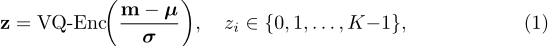
producing a code sequence z = (z1, . . . , zT ) of length T=⌊L/d⌋, where d=4 is the temporal downsampling factor and K=512 is the codebook size. Each code zi is mapped to a dedicated token <Motion_zi>, and the complete motion is delimited by <Motion> and </Motion> boundary markers. We directly use the released pre-trained weights from [50], yielding 10-50 motion tokens per sample.
3.3 Dataset Construction
We construct a training corpus on HumanML3D [10] by pairing each motion clip with textual descriptions, structured CoT reasoning steps, and discrete motion tokens from the VQ-VAE (§3.2). Following UniMo [38], a vision-language model generates continuous motion descriptions that are segmented into 1-9 atomic reasoning steps, with DeepSeek-R1 [13] used for chain completeness verification. The full pipeline is provided in the supplementary material.
Each training instance follows the Qwen ChatML template: (1) a question q containing the motion description; (2) reasoning steps s=(s1, . . . , sN) wrapped in <think>. . .</think> tags; and (3) an answer a containing the motion token sequence. The corpus contains 66515 training instances with CoT annotations; dataset analysis is provided in the supplementary material.
3.4 Latent-CoT Supervised Fine-Tuning (LaCT-Motion SFT)
Contemporary LLMs do not contain motion-oriented tokens; a model cannot produce or interpret motion tokens without dedicated training. We therefore introduce a supervised fine-tuning stage that first teaches the model explicit CoTbased motion generation, the practice phase, and then progressively compresses the explicit reasoning into continuous latent representations, the internalization phase. Fig. 3 provides an overview of the three core mechanisms: (a) the curriculum progressively replaces explicit reasoning steps with latent tokens across training phases; (b) a multi-pass forward procedure iteratively injects contextualized hidden states into latent token embeddings; and (c) a loss masking strategy supervises only the explicit reasoning and answer tokens while excluding latent regions.
![Fig. 3: Latent-CoT SFT pipeline. (a) Curriculum progression: training advances through three phases-Phase A trains with fully explicit CoT, Phase B progressively replaces the first k reasoning steps with latent tokens, and Phase C operates in the fully latent regime with all explicit steps removed. (b) Multi-pass forward: at each pass i, the model computes a forward pass up to latent token li, extracts the preceding hidden state hi-1, and overwrites the embedding e(li) ← hi-1; KV caches are reused across passes to avoid redundant computation. (c) Loss masking: question tokens, latentregion delimiters, latent tokens, and padding are excluded from the loss; only explicit reasoning tokens (when present) and answer motion tokens are supervised.](assets/0047-picture.png)
Vocabulary Extension and Embedding Initialization. Starting from a LLM Qwen2.5-3B-Instruct, we augment the tokenizer with 512 motion tokens (mapped one-to-one to the VQ-VAE codebook), 2 motion boundary markers (<Motion>, </Motion>), 2 think markers (<think>, </think>), and 3 latent tokens (<|start-latent|>, <|end-latent|>, <|latent|>). The embedding matrix and language modeling head are resized accordingly, and the <|latent|> embedding is initialized from the delimiter token "«" for a more informative starting point.
Curriculum Learning Schedule. With the extended vocabulary in place, we now describe when and what to replace during training. Training the model to reason entirely in latent space from scratch is intractable, as the latent tokens carry no semantic content at initialization. We therefore adopt a three-phase curriculum (Fig. 3a) that mirrors the practice makes perfect progression: from explicit practice to progressive internalization to full consolidation.
Notation. For a training sample i with Ni atomic reasoning steps s=(s1, . . . , sNi ), we write q for the question (motion description) and a for the answer (motiontoken sequence). The latent region is delimited by the boundary markers ts/te and filled with latent tokens l1, . . . , lM, while r denotes any reasoning steps that remain explicit. The curriculum stage is k, c is the number of latent tokens allocated per replaced step (so M=min(k,Ni) · c), Kmax is the maximum stage, and Es is the number of epochs spent at each stage.
Phase A: Practice (Explicit CoT warm-up). The first phase trains the model with fully explicit CoT for E0 epochs. Like a student first learning to solve problems by writing out every step, this phase establishes a strong foundation for structured motion reasoning before any latent replacement begins. The decomposition of E0 into per-stage and warm-up components is detailed in the supplementary material.
Phase B: Internalization (Progressive latent replacement). After the warm-up, the curriculum advances through Kmax stages, gradually compressing explicit reasoning into latent tokens, analogous to an intermediate learner who begins to skip familiar steps. Let e′ denote the epoch offset from the end of Phase A. The scheduled stage is:

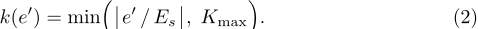
At stage k, the first min(k,Ni) reasoning steps are excised from sample i (which has Ni steps) and replaced by min(k,Ni)×c latent tokens, where c denotes the number of latent tokens allocated per replaced step. The remaining steps are retained as explicit text:

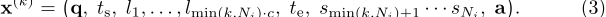
When k ≥ Ni, the explicit CoT portion vanishes and the sequence reduces to (q, ts, l1, . . . , lNi·c, te, a). To prevent overfitting to rigid stage boundaries, we introduce stochastic stage sampling: with probability pu each training sample independently draws a random stage k′∼Uniform(0,Ni) in lieu of the scheduled stage, where Ni is the number of available reasoning steps for sample i.
Phase C: Consolidation (Fully latent). The final Ec epoch operates in the fully latent regime: the stage is forced to Kmax, all explicit reasoning is removed, and the latent region is padded to a fixed length of Kmax·c tokens. Stochastic stage sampling is disabled (pu overridden to 0) so that every sample is presented in the fully latent format. This phase is the culmination of internalization: the model must generate motion tokens conditioned exclusively on latent representations, with no residual explicit reasoning as scaffolding. All hyperparameter values are provided in §4.2.
Multi-Pass Forward with Latent Token Replacement. The curriculum above specifies which reasoning steps are replaced and when; we now describe how the replacement is realized during each forward pass (Fig. 3b). The central mechanism replaces the standard single-pass forward computation with a multi-pass procedure that iteratively fills latent token embeddings with contextualized hidden states. Concretely, let x=(q, ts, l1, . . . , lM ︸ ︷︷ ︸ latent , te, r, a) denote an input sequence containing M latent tokens, where q is the question, ts/te are the latent-region boundary markers, r represents any remaining explicit reasoning steps, and a is the answer.
Iterative hidden-state injection (passes 1, . . . ,M). At the i-th pass, the model performs a forward computation from the end of the previous pass up to the position of the i-th latent token li, reusing the KV cache accumulated in prior passes to avoid redundant computation. The last-layer hidden state hi-1 at the position immediately preceding li is then extracted and used to overwrite the embedding of li:

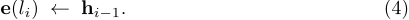
Each li is a dedicated latent marker (§3.4): its static embedding is never used as a prediction target but serves only as a placeholder slot that the write in Eq. (4) overwrites with the contextualized hidden state hi-1. To ensure correct gradient propagation, this assignment is implemented as an in-place write on a cloned embedding tensor via differentiable indexing; crucially, hi-1 is not detached from the computational graph. Because each hidden state depends on the embeddings of all preceding latent tokens, the resulting recurrence e(li) = fθ(x<pos(li); e(l1), . . . , e(li-1)) forms a differentiable chain through which gradients flow from the downstream loss back through all M injection steps without interruption.
Why hidden-state injection is stable. The injected vector hi-1 is a last-layer hidden state from the residual stream and shares the dimensionality of the input embedding space, so it is structurally compatible with the subsequent transformer layers without any extra projection or normalization module. Rather than enforcing this alignment architecturally, we let it emerge end-to-end: gradients from the downstream motion-token prediction reshape the hidden states until they form usable latent inputs. To keep this learning stable, we (i) initialize from the explicit-CoT SFT checkpoint, (ii) retain the fixed latent markers ts/te as anchors, (iii) apply gradient-norm clipping, and (iv) use a conservative learning-rate schedule detailed in the supplementary material.
Final pass. After all M latent embeddings have been replaced, a final forward pass processes the remaining tokens (r, a) using the full accumulated KV cache. The logits from all M+1 passes are concatenated along the sequence dimension:

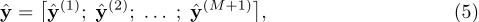
and the model is optimized with the standard next-token cross-entropy objective:

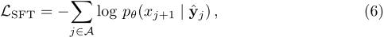
where A indexes the set of unmasked positions. Specifically, the following token categories are assigned label -100 (the standard ignore_index convention) and excluded from the loss (Fig. 3c): question tokens q, the latent-region delimiters ts and te, all latent tokens l1, . . . , lM, and any padding. Thus A contains only the explicit reasoning tokens sk+1, . . . , sNi (when present) and the answer motion tokens a.
3.5 GRPO with Verifiable Rewards
The final stage applies GRPO [21] under the fully latent regime (k=Kmax) to refine the internalized latent policy. Following GRPO, we sample G candidates per prompt, compute group-normalized advantages, and optimize with a KLpenalized objective (β-weighted divergence from the SFT reference policy). We design three verifiable reward functions tailored to text-to-motion generation.
Format Reward. rformat=1 if the output matches <Motion>{tokens}</Motion>; 0 otherwise.
Motion Similarity Reward. Cosine similarity between generated and groundtruth motion embeddings from a pre-trained encoder fmotion [50]:

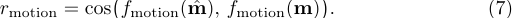
Semantic Similarity Reward. Cosine similarity between the generated motion embedding and the text embedding in a shared space:

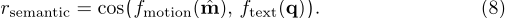
Joint Reward.

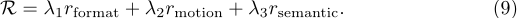
Both reward encoders fmotion and ftext are kept frozen throughout GRPO and are identical to those used by UniMo [38] and MoLingo [15]; only the policy weights are updated.
Rollouts under the fully latent regime. Since latent hidden-state injection is deterministic for fixed weights, all G rollouts share a single KV cache; diversity arises solely from temperature-based motion decoding. Reward signals update the policy weights, which indirectly refine future latent representations, while KV cache sharing reduces cost from G multi-pass forwards to one; the rollout procedure is detailed in the supplementary material.
3.6 Inference
At test time, the input contains Kmax·c latent tokens and no explicit reasoning steps. The multi-pass mechanism (§3.4) first processes all latent tokens while retaining the KV cache, which is then directly reused for autoregressive greedy decoding of motion tokens, avoiding a redundant full-sequence forward pass. Compared to explicit CoT inference, this eliminates the cost of sequentially generating reasoning tokens while retaining the benefits of structured intermediate computation.
4 Experiments
4.1 Experimental Settings
Datasets. We evaluate on the widely-used HumanML3D [10] benchmark, which contains 14,616 motions and 44,970 textual descriptions sourced from AMASS [23] and HumanAct12 [12]. We follow the standard train/val/test split and use the 22-joint, 263-dimensional motion representation.
We follow standard evaluation protocols [10] and report R-Precision@k, FID, MM-Dist, and Diversity; metric definitions are provided in the supplementary material. All metrics are computed 20 times to obtain 95% confidence intervals. Baselines. We compare against both diffusion-based methods (MDM, MLD [7], MotionDiffuse [51]) and discrete token-based methods (T2M [10], TM2T [11], T2M-GPT [50], MotionGPT [16], MoMask [9], MotionChain [17], MotionAgent [44], MotionGPT-2 [39], MotionGPT-3 [55], MG-MotionLLM [42], MotionR1 [24], UniMo [38]).
4.2 Implementation Details
We fine-tune Qwen2.5-3B-Instruct on 2 NVIDIA H200 GPUs for 7 epochs. The latent curriculum uses Kmax=8 and c=2; GRPO samples G=8 candidates with KL penalty β=0.001. Full hyperparameter details are provided in the supplementary material.
4.3 Quantitative Results
Table 1 presents a comprehensive comparison with existing methods on HumanML3D. Our method achieves the best R-Precision across all top-k settings (Top-1: 0.577, Top-2: 0.783, Top-3: 0.873) and the lowest MM-Dist (2.506), indicating strong text-motion alignment. Compared to MotionGPT-3 [55], the strongest prior method on R-Precision, our approach improves Top-1 by +0.035 (6.5% relative) and reduces MM-Dist by 0.262 (9.5% relative). Compared to Motion-R1 [24], which also leverages CoT reasoning and GRPO, our approach improves Top-1 by +0.062 (12.0% relative), demonstrating that internalized latent reasoning not only preserves but surpasses the benefits of explicit CoT. Compared to UniMo [38], which similarly builds on explicit CoT but applies standard SFT without latent internalization, our approach improves Top-1 by +0.038 (7.1% relative), further confirming the advantage of compressing reasoning into continuous latent representations. (Motion-R1 numbers are cited from their original publication, as code and weights have not been released; TBYM numbers are likewise cited from [28].) On FID, our approach achieves 0.167; the lower FID of TBYM [28] (0.040) and MoMask (0.045) stems respectively from motion-native latent reasoning and masked generative modeling, complementary paradigms. Against TBYM-a concurrent method that reasons in motion-native latents rather than internalizing linguistic CoT-LaCT-Motion improves Top-1 by +0.040 (0.577 vs. 0.537) and MM-Dist by 0.389 (2.506 vs. 2.895), though TBYM attains the lowest FID. Notably, all results are obtained under the fully latent regime with no explicit reasoning tokens at inference; latency analysis is provided in the supplementary material.

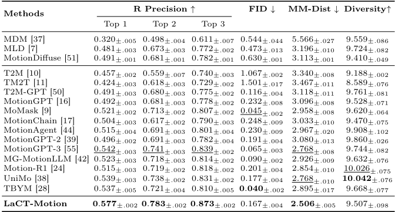
Recognized table text (check against the image)
| Methods | R Precision ↑ | FID ↓ | MM-Dist ↓ | Diversity↑ | ||
|---|---|---|---|---|---|---|
| Top 1 | Top 2 | Top 3 | ||||
| MDM [37] MLD [7] MotionDiffuse [51] | 0.320±.005 0.481±.003 0.491±.001 | 0.498±.004 0.673±.003 0.681±.001 | 0.611±.007 0.772±.002 0.782±.001 | 0.544±.044 0.473±.013 0.630±.001 | 5.566±.027 3.196±.010 3.113±.001 | 9.559±.086 9.724±.082 9.410±.049 |
| T2M [10] TM2T [11] T2M-GPT [50] MotionGPT [16] MoMask [9] MotionChain [17] MotionAgent [44] MotionGPT-2 [39] MotionGPT-3 [55] MG-MotionLLM [42] Motion-R1 [24] UniMo [38] TBYM [28] | 0.457±.002 0.424±.003 0.491±.003 0.492±.003 0.521±.002 0.504±.003 0.515±.004 0.496±.002 0.542±.003 0.523±.003 0.515±.003 0.539±.003 0.537±.005 | 0.559±.007 0.618±.003 0.680±.003 0.681±.003 0.713±.002 0.617±.002 0.691±.003 0.691±.003 0.741±.003 0.718±.003 0.719±.002 0.738±.002 0.721±.004 | 0.740±.003 0.729±.002 0.775±.002 0.778±.002 0.807±.002 0.790±.003 0.801±.004 0.782±.004 0.839±.002 0.814±.002 0.818±.002 0.831±.002 0.810±.005 | 1.067±.002 1.501±.017 0.116±.004 0.232±.008 0.045±.002 0.248±.009 0.230±.009 0.191±.004 0.065±.003 0.090±.002 0.201±.004 0.177±.004 0.040±.002 | 3.340±.008 3.467±.011 3.118±.011 3.096±.008 2.958±.008 3.033±.010 2.967±.020 3.080±.013 2.768±.008 2.926±.009 2.854±.010 2.768±.010 2.895±.017 | 9.188±.002 8.589±.076 9.761±.081 9.528±.071 9.620±.064 9.470±.075 9.908±.102 9.860±.026 9.744±.082 9.632±.076 10.026±.075 10.042±.076 9.668±.077 |
| LaCT-Motion | 0.577±.002 | 0.783±.002 | 0.873±.002 | 0.167±.004 | 2.506±.005 | 9.507±.098 |
4.4 Ablation Studies
We conduct ablation experiments to examine the contribution of each design choice. All ablation variants are trained under identical settings except for the specified modification, and evaluated on the HumanML3D test set.
Effect of training stages. Table 2 quantifies the contribution of each stage. The upper block reports staged checkpoints from the full pipeline. Stage I alone yields poor metrics (Top-1: 0.167, FID: 24.119), as the model has only begun learning motion generation through explicit reasoning. Stage II improves performance drastically (Top-1: 0.453, FID: 0.466), confirming that the latent curriculum successfully transfers reasoning capability into continuous representations. Stage III (GRPO) lifts all metrics to their best values (Top-1: 0.577, FID: 0.167), demonstrating effective reward-driven refinement of the latent policy.

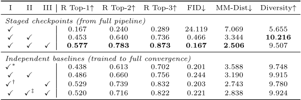
Recognized table text (check against the image)
| I | II | III | R Top-1↑ | R Top-2↑ | R Top-3↑ | FID↓ | MM-Dist↓ | Diversity↑ |
| Staged checkpoints (from full pipeline) | ||||||||
|---|---|---|---|---|---|---|---|---|
| ✓ | 0.167 | 0.240 | 0.289 | 24.119 | 7.069 | 5.655 | ||
| ✓ | ✓ | 0.453 | 0.640 | 0.736 | 0.466 | 3.344 | 10.216 | |
| ✓ | ✓ | ✓ | 0.577 | 0.783 | 0.873 | 0.167 | 2.506 | 9.507 |
| Independent baselines (trained to full convergence) | ||||||||
| ✓∗ | 0.438 | 0.613 | 0.702 | 0.201 | 3.588 | 9.748 | ||
| ✓ | ✓ | 0.486 | 0.660 | 0.756 | 0.244 | 3.190 | 9.915 | |
| ✓† | ✓ | 0.529 | 0.739 | 0.832 | 0.203 | 2.743 | 9.780 | |
| ✓ | ✓‡ | ✓ | 0.520 | 0.716 | 0.822 | 0.221 | 2.838 | 9.924 |
The lower block reports independently trained baselines. UniMo∗ (standard SFT, no latent reasoning) achieves Top-1 0.438. Our latent curriculum (I+II, trained to convergence) improves this to 0.486 (+0.048), showing that the explicitto-latent curriculum itself provides a meaningful gain. UniMo† (explicit CoT + GRPO, without latent internalization) reaches 0.529, confirming that GRPO alone substantially benefits explicit CoT. However, the full pipeline I+II+III (0.577) surpasses I+III† by +0.048 on Top-1 and -0.036 on FID (0.167 vs. 0.203), demonstrating that latent internalization provides a more effective reasoning substrate for reward-driven optimization than explicit CoT.
Effect of the multi-pass curriculum. To isolate the contribution of our internalization mechanism from the mere presence of latent tokens, we compare against a single-pass latent distillation baseline (last row of Table 2) that discards both the progressive curriculum and the multi-pass hidden-state injection: all explicit reasoning is compressed into the same latent budget within a single forward pass, after which the identical GRPO stage is applied. This baseline attains only Top-1 0.520 and FID 0.221, trailing the full pipeline (Top-1 0.577, FID 0.167) by 0.057 on Top-1 and 0.054 on FID despite using the same latent capacity, supervision, and rewards. The gap confirms that the improvement originates from the curriculum and iterative hidden-state injection (§3.4) themselves rather than from simply introducing latent tokens, directly validating our core design.
Effect of latent tokens per step (c). Table 3 varies the number of latent tokens allocated per replaced reasoning step. All variants are evaluated after Stage II (latent curriculum SFT) before GRPO refinement, isolating the effect of c on the internalization capacity. c=1 yields the highest Top-1 (0.458) and fastest inference (369s) but suffers from poor FID (0.536) and low Diversity (9.802), indicating insufficient capacity per step. c=4 doubles the latent budget over c=2 without improving any metric, while increasing inference time to 455s.

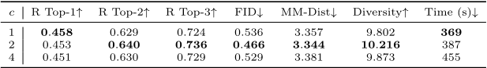
Recognized table text (check against the image)
| c | R Top-1↑ | R Top-2↑ | R Top-3↑ | FID↓ | MM-Dist↓ | Diversity↑ | Time (s)↓ |
|---|---|---|---|---|---|---|---|
| 1 | 0.458 | 0.629 | 0.724 | 0.536 | 3.357 | 9.802 | 369 |
| 2 | 0.453 | 0.640 | 0.736 | 0.466 | 3.344 | 10.216 | 387 |
| 4 | 0.451 | 0.630 | 0.729 | 0.529 | 3.381 | 9.873 | 455 |

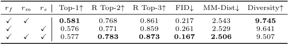
Recognized table text (check against the image)
| rf | rm | rs | Top-1↑ | R Top-2↑ | R Top-3↑ | FID↓ | MM-Dist↓ | Diversity↑ |
|---|---|---|---|---|---|---|---|---|
| ✓ | ✓ | 0.581 | 0.768 | 0.861 | 0.217 | 2.543 | 9.745 | |
| ✓ | ✓ | 0.576 | 0.771 | 0.859 | 0.261 | 2.529 | 9.641 | |
| ✓ | ✓ | ✓ | 0.577 | 0.783 | 0.873 | 0.167 | 2.506 | 9.507 |
c=2 achieves the best FID (0.466), MM-Dist (3.344), and Diversity (10.216) with moderate inference cost (387s). We select c=2 for the subsequent GRPO stage for two additional reasons: (i) GRPO requires sampling G rollouts per input, so inference speed directly impacts training cost, c=2 offers a favorable speedquality trade-off; (ii) high Diversity provides a broader search space for grouprelative advantage estimation, enabling more effective reward-driven exploration (cf. Table 2, Stage I+II+III).
Effect of reward components. Table 4 ablates the three reward signals used in GRPO. The format reward alone provides limited gains, while the motion similarity reward is the dominant signal, using rf+rm alone already achieves the highest Top-1 (0.581) and Diversity (9.745). Adding the semantic similarity reward (rf+rm+rs) further improves FID (0.167), MM-Dist (2.506), and higherorder R-Precision (Top-2: 0.783, Top-3: 0.873), demonstrating that the rewards capture complementary aspects of generation quality. In contrast, removing rm (rf+rs) leads to severe degradation across all metrics, confirming that motionlevel supervision is essential for the GRPO stage.
4.5 Qualitative Results
We present qualitative comparisons under several representative text prompts in Fig. 4, comparing MoMask, MotionAgent, and our method LaCT-Motion. The results highlight differences in semantic alignment, compositional motion understanding, and long-horizon generation.
For the prompt "Person turns around so their back is facing the front. They then walk forward for a moment before sliding to the right.", LaCT-Motion generates a clear multi-stage motion sequence capturing the turn, forward walking, and lateral sliding. In contrast, both MoMask and MotionAgent fail to produce the rightward sliding and mainly move along the original direction, indicating weaker compositional understanding. For "A person shakes their head in disbelief, then looks around the room.", our method produces distinct head and upper-body movements corresponding to the two semantic stages with smooth transitions. Baseline methods show weaker alignment, often missing clear head motions or failing to capture the transition between actions. For the long-horizon prompt "A man does kungfu for long time.", MoMask generates only short sequences with limited motion diversity. MotionAgent produces longer outputs but exhibits frame repetition and pose stagnation. In contrast, LaCT-Motion maintains coherent and diverse motions over time, producing smoother and more continuous martial arts movements.

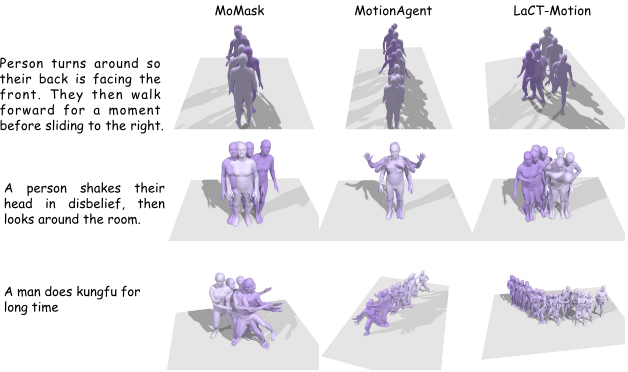
5 Conclusion
We present LaCT-Motion, a training recipe for text-to-motion generation that embodies the practice makes perfect principle: explicit CoT reasoning is first learned (practice), then progressively compressed into continuous latent tokens (internalization), and finally refined through GRPO with verifiable rewards (perfection). Experiments on HumanML3D show state-of-the-art text-motion alignment while operating entirely in the latent regime, demonstrating that deliberate reasoning can be distilled into efficient latent representations without sacrificing quality. Future work will explore adaptive curricula, scalable training, and extension to compositional motion generation.
Acknowledgements. This work was supported by the Key R&D Project of Zhejiang Province under Grant 2025C01016.
References
1. Achiam, J., Adler, S., Agarwal, S., Ahmad, L., Akkaya, I., Aleman, F.L., Almeida, D., Altenschmidt, J., Altman, S., Anadkat, S., et al.: Gpt-4 technical report. arXiv preprint arXiv:2303.08774 (2023)
2. Ahn, H., Ha, T., Choi, Y., Yoo, H., Oh, S.: Text2action: Generative adversarial synthesis from language to action. In: 2018 IEEE International Conference on Robotics and Automation (ICRA). pp. 5915-5920. IEEE (2018)
3. Ahuja, C., Morency, L.P.: Language2pose: Natural language grounded pose forecasting. In: 2019 International conference on 3D vision (3DV). pp. 719-728. IEEE (2019)
4. Athanasiou, N., Petrovich, M., Black, M.J., Varol, G.: Teach: Temporal action composition for 3d humans. In: 2022 International Conference on 3D Vision (3DV). pp. 414-423. IEEE (2022)
5. Banerjee, P., Gokhale, T., Yang, Y., Baral, C.: Weakly supervised relative spatial reasoning for visual question answering. In: Proceedings of the IEEE/CVF International Conference on Computer Vision. pp. 1908-1918 (2021)
6. Chen, K., Tan, Z., Lei, J., Zhang, S.H., Guo, Y.C., Zhang, W., Hu, S.M.: Choreomaster: choreography-oriented music-driven dance synthesis. ACM Transactions on Graphics (TOG) 40(4), 1-13 (2021)
7. Chen, X., Jiang, B., Liu, W., Huang, Z., Fu, B., Chen, T., Yu, G.: Executing your commands via motion diffusion in latent space. In: Proceedings of the IEEE/CVF conference on computer vision and pattern recognition. pp. 18000-18010 (2023)
8. Ghosh, A., Cheema, N., Oguz, C., Theobalt, C., Slusallek, P.: Synthesis of compositional animations from textual descriptions. In: Proceedings of the IEEE/CVF international conference on computer vision. pp. 1396-1406 (2021)
9. Guo, C., Mu, Y., Javed, M.G., Wang, S., Cheng, L.: Momask: Generative masked modeling of 3d human motions. In: Proceedings of the IEEE/CVF Conference on Computer Vision and Pattern Recognition. pp. 1900-1910 (2024)
10. Guo, C., Zou, S., Zuo, X., Wang, S., Ji, W., Li, X., Cheng, L.: Generating diverse and natural 3d human motions from text. In: Proceedings of the IEEE/CVF conference on computer vision and pattern recognition. pp. 5152-5161 (2022)
11. Guo, C., Zuo, X., Wang, S., Cheng, L.: Tm2t: Stochastic and tokenized modeling for the reciprocal generation of 3d human motions and texts. In: European Conference on Computer Vision. pp. 580-597. Springer (2022)
12. Guo, C., Zuo, X., Wang, S., Zou, S., Sun, Q., Deng, A., Gong, M., Cheng, L.: Action2motion: Conditioned generation of 3d human motions. In: Proceedings of the 28th ACM international conference on multimedia. pp. 2021-2029 (2020)
13. Guo, D., Yang, D., Zhang, H., Song, J., Wang, P., Zhu, Q., Xu, R., Zhang, R., Ma, S., Bi, X., et al.: Deepseek-r1: Incentivizing reasoning capability in llms via reinforcement learning. arXiv preprint arXiv:2501.12948 (2025)
14. Hao, S., Sukhbaatar, S., Su, D., Li, X., Hu, Z., Weston, J., Tian, Y.: Training large language models to reason in a continuous latent space. arXiv preprint arXiv:2412.06769 (2024)
15. He, Y., Tiwari, G., Zhang, X., Bora, P., Birdal, T., Lenssen, J.E., Pons-Moll, G.: Molingo: Motion-language alignment for text-to-motion generation. arXiv preprint arXiv:2512.13840 (2025)
16. Jiang, B., Chen, X., Liu, W., Yu, J., Yu, G., Chen, T.: Motiongpt: Human motion as a foreign language. Advances in Neural Information Processing Systems 36, 20067-20079 (2023)
17. Jiang, B., Chen, X., Zhang, C., Yin, F., Li, Z., Yu, G., Fan, J.: Motionchain: Conversational motion controllers via multimodal prompts. In: European Conference on Computer Vision. pp. 54-74. Springer (2024)
18. Koh, J.Y., Fried, D., Salakhutdinov, R.R.: Generating images with multimodal language models. Advances in Neural Information Processing Systems 36, 2148721506 (2023)
19. Li, J., Li, D., Savarese, S., Hoi, S.: Blip-2: Bootstrapping language-image pretraining with frozen image encoders and large language models. In: International conference on machine learning. pp. 19730-19742. PMLR (2023)
20. Li, R., Yang, S., Ross, D.A., Kanazawa, A.: Ai choreographer: Music conditioned 3d dance generation with aist++. In: Proceedings of the IEEE/CVF international conference on computer vision. pp. 13401-13412 (2021)
21. Liu, A., Feng, B., Xue, B., Wang, B., Wu, B., Lu, C., Zhao, C., Deng, C., Zhang, C., Ruan, C., et al.: Deepseek-v3 technical report. arXiv preprint arXiv:2412.19437 (2024)
22. Liu, Y., Peng, B., Zhong, Z., Yue, Z., Lu, F., Yu, B., Jia, J.: Seg-zero: Reasoning-chain guided segmentation via cognitive reinforcement. arXiv preprint arXiv:2503.06520 (2025)
23. Mahmood, N., Ghorbani, N., Troje, N.F., Pons-Moll, G., Black, M.J.: Amass: Archive of motion capture as surface shapes. In: Proceedings of the IEEE/CVF international conference on computer vision. pp. 5442-5451 (2019)
24. Ouyang, R., Li, H., Zhang, Z., Wang, X., Zhu, Z., Huang, G., Wang, X.: Motion-r1: Chain-of-thought reasoning and reinforcement learning for human motion generation. arXiv e-prints pp. arXiv-2506 (2025)
25. Pan, J., Liu, C., Wu, J., Liu, F., Zhu, J., Li, H.B., Chen, C., Ouyang, C., Rueckert, D.: Medvlm-r1: Incentivizing medical reasoning capability of vision-language models (vlms) via reinforcement learning. In: International Conference on Medical Image Computing and Computer-Assisted Intervention. pp. 337-347. Springer (2025)
26. Petrovich, M., Black, M.J., Varol, G.: Action-conditioned 3d human motion synthesis with transformer vae. In: Proceedings of the IEEE/CVF international conference on computer vision. pp. 10985-10995 (2021)
27. Petrovich, M., Black, M.J., Varol, G.: Temos: Generating diverse human motions from textual descriptions. In: European conference on computer vision. pp. 480497. Springer (2022)
28. Qian, Y., Wang, J., Feng, Y., Xu, C., Lu, W., Liu, Y., Sun, B., Chen, Y., Liu, Y., Wang, S.: Think before you move: Latent motion reasoning for text-to-motion generation. arXiv preprint arXiv:2512.24100 (2025)
29. Shen, Z., Yan, H., Zhang, L., Hu, Z., Du, Y., He, Y.: Codi: Compressing chainof-thought into continuous space via self-distillation. In: Proceedings of the 2025 Conference on Empirical Methods in Natural Language Processing. pp. 677-693 (2025)
30. Siyao, L., Yu, W., Gu, T., Lin, C., Wang, Q., Qian, C., Loy, C.C., Liu, Z.: Bailando: 3d dance generation by actor-critic gpt with choreographic memory. 2022 IEEE/CVF Conference on Computer Vision and Pattern Recognition (CVPR) pp. 11040-11049 (2022), https://api.semanticscholar.org/CorpusID:247627867
31. Starke, S., Mason, I., Komura, T.: Deepphase: Periodic autoencoders for learning motion phase manifolds. ACM Transactions on Graphics (ToG) 41(4), 1-13 (2022)
32. Sun, G., Hua, H., Wang, J., Luo, J., Dianat, S., Rabbani, M., Rao, R., Tao, Z.: Latent chain-of-thought for visual reasoning. arXiv preprint arXiv:2510.23925 (2025)
33. Sun, M., Xu, C., Jiang, X., Liu, Y., Sun, B., Huang, R.: Beyond talking - generating holistic 3d human dyadic motion for communication. International Journal of Computer Vision 133, 2910 - 2926 (2024), https://api.semanticscholar.org/ CorpusID:268732699
34. Tan, H., Ji, Y., Hao, X., Lin, M., Wang, P., Wang, Z., Zhang, S.: Reason-rft: Reinforcement fine-tuning for visual reasoning. arXiv e-prints pp. arXiv-2503 (2025)
35. Tang, Y., Bi, J., Xu, S., Song, L., Liang, S., Wang, T., Zhang, D., An, J., Lin, J., Zhu, R., et al.: Video understanding with large language models: A survey. IEEE Transactions on Circuits and Systems for Video Technology (2025)
36. Tevet, G., Gordon, B., Hertz, A., Bermano, A.H., Cohen-Or, D.: Motionclip: Exposing human motion generation to clip space. In: European Conference on Computer Vision. pp. 358-374. Springer (2022)
37. Tevet, G., Raab, S., Gordon, B., Shafir, Y., Cohen-Or, D., Bermano, A.H.: Human motion diffusion model. arXiv preprint arXiv:2209.14916 (2022)
38. Wang, G., Liu, K., Lin, J., Song, G., Li, J., Han, X.: Unimo: Unified motion generation and understanding with chain of thought. arXiv preprint arXiv:2601.12126 (2026)
39. Wang, Y., Huang, D., Zhang, Y., Ouyang, W., Jiao, J., Feng, X., Zhou, Y., Wan, P., Tang, S., Xu, D.: Motiongpt-2: A general-purpose motion-language model for motion generation and understanding. arXiv preprint arXiv:2410.21747 (2024)
40. Wang, Z., Wen, X., Du, L., Li, K., Wu, Z., Xu, X., Zhang, Q., Lu, C., Fan, H.: Vast: Video ability-stratified taxonomy for data-efficient video reasoning. In: Proceedings of the IEEE/CVF Conference on Computer Vision and Pattern Recognition. pp. 18576-18586 (2026)
41. Wei, J., Wang, X., Schuurmans, D., Bosma, M., Xia, F., Chi, E., Le, Q.V., Zhou, D., et al.: Chain-of-thought prompting elicits reasoning in large language models. Advances in neural information processing systems 35, 24824-24837 (2022)
42. Wu, B., Xie, J., Shen, K., Kong, Z., Ren, J., Bai, R., Qu, R., Shen, L.: Mgmotionllm: A unified framework for motion comprehension and generation across multiple granularities. In: Proceedings of the Computer Vision and Pattern Recognition Conference. pp. 27849-27858 (2025)
43. Wu, J., Gan, W., Chen, Z., Wan, S., Yu, P.S.: Multimodal large language models: A survey. In: 2023 IEEE International Conference on Big Data (BigData). pp. 2247-2256. IEEE (2023)
44. Wu, Q., Zhao, Y., Wang, Y., Liu, X., Tai, Y.W., Tang, C.K.: Motion-agent: A conversational framework for human motion generation with llms. arXiv preprint arXiv:2405.17013 (2024)
45. Xiao, L., Lu, S., Pi, H., Fan, K., Pan, L., Zhou, Y., Feng, Z., Zhou, X., Peng, S., Wang, J.: Motionstreamer: Streaming motion generation via diffusion-based autoregressive model in causal latent space. In: Proceedings of the IEEE/CVF International Conference on Computer Vision. pp. 10086-10096 (2025)
46. Xiong, S., Yang, Y., Payani, A., Kerce, J.C., Fekri, F.: Teilp: Time prediction over knowledge graphs via logical reasoning. In: Proceedings of the AAAI conference on artificial intelligence. vol. 38, pp. 16112-16119 (2024)
47. Xu, C., Sun, M., Cheng, Z.Q., Wang, F., Liu, Y., Sun, B., Huang, R., Hauptmann, A.G.: Combo: Co-speech holistic 3d human motion generation and efficient customizable adaptation in harmony. IEEE transactions on pattern analysis and machine intelligence PP (2024), https://api.semanticscholar.org/CorpusID: 271903833
48. Xu, G., Jin, P., Wu, Z., Li, H., Song, Y., Sun, L., Yuan, L.: Llava-cot: Let vision language models reason step-by-step. In: Proceedings of the IEEE/CVF International Conference on Computer Vision. pp. 2087-2098 (2025)
49. Zhang, J., Fan, H., Yang, Y.: Energymogen: Compositional human motion generation with energy-based diffusion model in latent space. In: Proceedings of the Computer Vision and Pattern Recognition Conference. pp. 17592-17602 (2025)
50. Zhang, J., Zhang, Y., Cun, X., Zhang, Y., Zhao, H., Lu, H., Shen, X., Shan, Y.: Generating human motion from textual descriptions with discrete representations. In: Proceedings of the IEEE/CVF conference on computer vision and pattern recognition. pp. 14730-14740 (2023)
51. Zhang, M., Cai, Z., Pan, L., Hong, F., Guo, X., Yang, L., Liu, Z.: Motiondiffuse: Text-driven human motion generation with diffusion model. IEEE transactions on pattern analysis and machine intelligence 46(6), 4115-4128 (2024)
52. Zhang, Z., Gao, H., Liu, A., Chen, Q., Chen, F., Wang, Y., Li, D., Zhao, R., Li, Z., Zhou, Z., et al.: Kmm: Key frame mask mamba for extended motion generation. arXiv preprint arXiv:2411.06481 (2024)
53. Zhang, Z., Liu, A., Chen, Q., Chen, F., Reid, I., Hartley, R., Zhuang, B., Tang, H.: Infinimotion: Mamba boosts memory in transformer for arbitrary long motion generation. arXiv preprint arXiv:2407.10061 (2024)
54. Zhou, Z., Wang, B.: Ude: A unified driving engine for human motion generation. In: Proceedings of the IEEE/CVF conference on computer vision and pattern recognition. pp. 5632-5641 (2023)
55. Zhu, B., Jiang, B., Wang, S., Tang, S., Chen, T., Luo, L., Zheng, Y., Chen, X.: Motiongpt3: Human motion as a second modality. arXiv preprint arXiv:2506.24086 (2025)
56. Zhuo, W., Ma, F., Fan, H.: Infinidreamer: Arbitrarily long human motion generation via segment score distillation. In: Proceedings of the IEEE/CVF International Conference on Computer Vision. pp. 14688-14698 (2025)